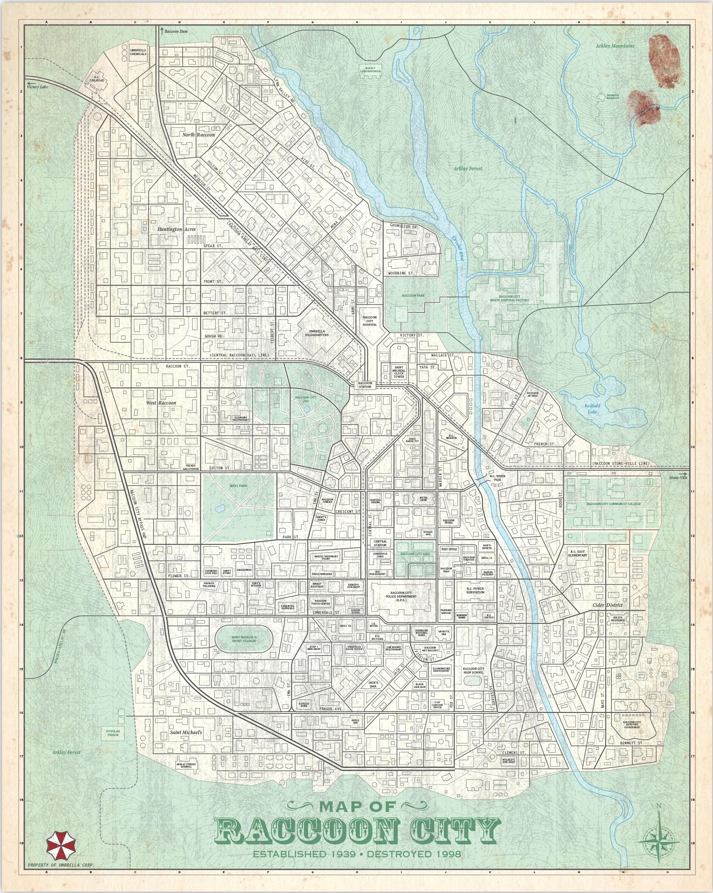

VERY BASIC RPG: ZOMBIE SURVIVAL EDITION (VBG-Z) v2.0
A lightweight d20 ruleset for asynchronous Play-by-Post survival horror.
1. THE CORE ENGINE
The Resolution Roll
When your survivor takes a risky, uncertain, or contested action under pressure:
Roll: 1d20 + relevant Stat bonus + applicable Trait bonus
• Stat Bonus: Add Force, Finesse, or Focus (-1 to +2).
• Trait Bonus: Add +2 for a relevant Major Trait, and +1 for a relevant Minor Trait (max one of each per roll).
• Compare to Target TN:
- TN 10 (Routine): Low-stress action, basic survival task.
- TN 15 (Risky): Standard combat shot, evasion, prying a door under threat.
- TN 20 (Desperate): Life-or-death shot, jumping across a collapsed fire escape.
- TN 25+ (Extreme): Staggering a massive B.O.W., escaping a closing hydraulic blast door.
Result Tiers & Outcomes
- Failure (Miss by 5+): You fail and suffer serious consequences (take 1 Strain or lose 1 Armor box, gain a Condition, alert enemies, or advance the Noise Clock).
- Success with Cost (Miss by 1–4): You achieve your objective, but pay a price: mark 1 Strain or Armor box, lose 1 weapon Durability box, consume ammunition, or gain a Condition.
- Clean Success (Beat by 0–5): You achieve your goal cleanly without penalty.
- Critical Success (Beat by 6+): Perfect execution. You achieve your goal and gain an extra advantage: bonus damage, stagger an enemy, or lower the local Noise Clock by -1.
2. CHARACTER CREATION
A. Stats (Distribute 3 Points)
Allocate 3 points across the three core stats (Max +2 at creation):
- FORCE: Physical power, melee strikes, shoving, lifting debris, enduring trauma.
- FINESSE: Agility, precision marksmanship, sprinting, lockpicking, silent movement.
- FOCUS: Awareness, diagnosing infection, searching rooms, mental composure under horror.
B. Survivor Traits
- 1 Major Trait (+2 Bonus): Your pre-collapse profession or primary archetype (e.g., S.T.A.R.S. Operative, Beat Cop, Trauma Surgeon, Combat Engineer, Wasteland Hunter).
- 1 Minor Trait (+1 Bonus): A specific habit, combat reflex, or survival perk (e.g., Steady Aim, Quick Draw, Silent Step, Tourniquet Specialist, Pack Optimizer).
C. Vitals & Starting Capacity
- Strain (Max 10): Begins at 4 Strain. Strain represents shock, stamina, blood loss, and will to survive.
- Armor Boxes: Begins at 0 Armor Boxes. Armor is gained only by finding and equipping protective gear.
- Inventory Capacity: Strictly 4 Inventory Slots.
3. SURVIVAL ACTION ECONOMY & SCENES
Action Economy (Per Post Turn)
Each survivor post during an active scene allows:
- 1 Major Action: Attack/Shoot, Sprint/Zone Move, Apply Full Medical Treatment (G+R, Spray), Breach/Force a door, Reload an empty firearm, or Clear a jammed weapon.
- 1 Minor Action: Ingest a single herb (G or B), Draw/Holster a weapon, Trade an item with an adjacent ally, Latch/Unlock a door, or Brace/Take Cover (+1 to next shot/defense).
- Free Actions: Dropping carried items, brief radio/tactical speech, or defensive knife grab counters.
Scene Framework
- Exploration Scene: Searching rooms, investigating lore, and solving environmental puzzles. The Noise Clock only advances on loud actions.
- Combat Scene (Side-Initiative): GM declares incoming enemy threats $\rightarrow$ all players post Major + Minor actions within the 24h window $\rightarrow$ GM resolves all outcomes simultaneously.
- Safe Room (Rest Scene): Fortified sanctuary. Immune to the Noise Clock. Free 4-slot inventory & Item Box management, medical treatments, and Typewriter checkpoint logs.
- Sector Transition: Moving to a new zone without active pursuit reduces the Noise Clock by -1.
4. DAMAGE, INJURIES & INFECTION
Taking Harm
• Armor Soaks First: If you wear armor, mark 1 Armor Box (⬜) to negate 1 instance of physical damage. When all boxes are marked, the armor is ruined.
• Strain Loss: Unmitigated hits mark 1 Strain.
• Downed / Bleeding Out: When you reach 0 Strain & 0 Armor, you collapse. Allies have 1 full 24-hour round to apply a medical item. If hit again or left untreated, your survivor dies.
Standard Conditions
- Bleeding: Lose 1 Strain at the end of each combat scene until treated. Cured by Green Herb mixtures or First Aid Spray.
- Poisoned: Lose 1 Strain whenever you take a physical action. Cured by Blue Herb mixtures or First Aid Spray.
- Limb Damaged: Leg (-2 Finesse, cannot sprint) or Arm (-2 Force, cannot wield 2-handed weapons). Cured by Full-Heal (G+R) or First Aid Spray.
- Panicked: Cannot spend Strain on Specializations. Cured by reaching a Safe Room or an ally passing a Focus TN 10 check.
Virus Infection Track (0 to 5)
Zombie bites and biological critical failures advance the track by +1 Stage:
- Stage 0 (Clean): Healthy.
- Stage 1 (Exposed): Low fever.
- Stage 2 (Tremors): -1 to Focus rolls.
- Stage 3 (Cellular Breakdown): Max Strain capped at 6; -1 to all rolls.
- Stage 4 (Terminal Agony): Max Strain capped at 3; cannot sprint.
- Stage 5 (Transformation): Death. The survivor turns into a hostile B.O.W.
(Infection can be reduced by -1 Stage using Blue Herb combinations, or stalled for 24h with Antiviral Serums).
5. GEAR & NOISE
Weapons & Durability
- Handgun (1 Slot): 15-round mag. +1 Noise per shot. Nat 1 jams the gun (1 Major Action to clear).
- Shotgun (2 Slots): 6 shells. +2 Noise per shot. Close-range stagger / spread.
- Tactical Rifle (2 Slots): 5 rounds. +2 Noise per shot. Extreme range armor penetration.
- Combat Knife (1 Slot, ⬜⬜⬜ 3 Durability): Close defense & grab counters. Breaks permanently when all 3 boxes are marked (no repairs).
- Heavy Tools (2 Slots, ⬜⬜⬜ 3 Durability): Fireaxe, Crowbar. +1 to Force breaching rolls.
Medical Items
- Green Herb (G, 1/4 Slot): Restores 1 Strain, cures Bleeding.
- Green + Green (G+G, 1/4 Slot): Restores 3 Strain, cures Bleeding.
- Green + Blue (G+B, 1/4 Slot): Restores 1 Strain, cures Bleeding & Poisoned, reduces Infection by -1 Stage.
- Green + Red (G+R, 1/4 Slot): Full Strain recovery, cures Bleeding & Limb Damaged.
- Green + Red + Blue (G+R+B, 1/4 Slot): Full Strain recovery, cures all conditions, reduces Infection by -1 Stage.
- First Aid Spray (1 Slot): Full Strain recovery, cures all physical conditions.
6. SURVIVOR DOSSIER TEMPLATE
Identity
Name: ____________ Callsign / Profession: ____________
Stats (3 Points Allocated)
Force: +__ Finesse: +__ Focus: +__
Traits & Abilities
Major Trait (+2): ________________________
Minor Trait (+1): ________________________
Tactical Specialization: __________________
Vitals & Status
Strain: [ ][ ][ ][ ] /4 (Max 10)
Armor: ⬜ / 0 Boxes
Infection Track: [0] Clean (0/5)
Active Conditions: None
Inventory (Strict 4 Slots)
• [Handgun - 15/15 rds (1 Slot)]
• [Combat Knife - ⬜⬜⬜ (1 Slot)]
• [9mm Ammo Box - 15 rds (1/4 Slot) / Empty]
• [Empty Slot]
VBG-Z: SURVIVOR TRAITS & SPECIALIZATIONS COMPENDIUM
**Note on Customization:** These lists are samples and baselines to inspire character creation. They are **not** strictly limited to what is written here. You are encouraged to collaborate with the GM to create your own personalized Major Traits, Minor Traits, or Tactical Specializations that fit your survivor concept.
1. MAJOR TRAITS (+2 BONUS)
Choose 1 at character creation. Represents your pre-collapse profession, military role, or primary archetype.
Tactical & Law Enforcement
• S.T.A.R.S. / Special Forces Operative: Room clearing, target acquisition, tactical firearm discipline, and weapon handling under pressure.
• Beat Cop / Law Enforcement: Street smarts, standard police issue firearms, crowd control, and assessing suspicious behavior.
• Umbrella Security Service (U.S.S.) Cleaner: Cold efficiency in bio-containment zones, hazard handling, hazmat protocols, and tactical maneuvering.
• Private Military Contractor (PMC): Heavy weaponry, suppressive fire, defensive positioning, and combat communications.
• Close Protection Bodyguard: Defensive reactions, intercepting incoming strikes meant for allies, and escort movement.
• SWAT Breacher: Shotgun breaching, clearing tight doorways, riot shield tactics, and heavy threshold control.
• Sniper / Recon Scout: Long-range rifle marksmanship, overwatch spotting, range estimation, and silent camouflage.
Medical & Science
• Trauma Surgeon / ER Doctor: Precision surgical procedures, stabilizing arterial bleeds, setting compound fractures, and managing medical tools.
• Paramedic / First Responder: Rapid triage under chaos, CPR, field dressing, and carrying incapacitated casualties.
• Virologist / Bio-Researcher: Identifying B.O.W. behavioral traits, understanding viral transmission vectors, and lab chemical synthesis.
• Pharmaceutical Chemist: Formulating chemical reagents, synthesizing herbal compounds, and identifying toxins/antidotes.
• Forensic Pathologist: Autopsy assessment, diagnosing infection cause/stage, and identifying anatomical weak points on mutated corpses.
• Combat Medic / Corpsman: Patching bullet and bite wounds under live hostile fire, dragging wounded allies, and conserving medical supplies.
• Toxicologist: Analyzing venom/spit compounds (Licker/Drain Deimos), synthesizing custom antidotes, and hazardous fluid handling.
Engineering & Technical
• Combat Engineer / Sapper: Fortifying structures, setting defensive barricades, door breaching, and structural integrity assessment.
• Master Mechanic: Hotwiring vehicles, repairing combustion engines, generator maintenance, and jury-rigging mechanical parts.
• Industrial Electrician: Rewiring substation panels, bypassing electronic keycard locks, and handling high-voltage hazards.
• Demolitions Specialist: Safe handling of explosive ordnance, creating pipe bombs, and controlled structural demolition.
• Locksmith / Security Technician: Bypassing mechanical locks, vault doors, security tumblers, and alarm systems quietly.
• Civil / Structural Engineer: Reading facility architectural blueprints, identifying load-bearing weak points, and flood/ventilation routing.
• Radio Operator / Comms Technician: Repairing military radio transmitters, intercepting broadcast frequencies, and signal triangulation.
Survivalist & Wilderness
• Wasteland Hunter / Tracker: Stalking prey silently, tracking infected spoor, setting snare traps, and long-range marksmanship.
• Wilderness Survival Guide: Foraging medicinal herbs, navigating unmapped terrain, fire starting, and shelter construction.
• Park Ranger / Forester: Broad wilderness survival, heavy terrain traversal, axe/machete handling, and weather assessment.
• Deep Woods Outfitter: Resource budgeting, pack optimization, and heavy load carrying over long distances.
• Extreme Outdoorsman / Mountaineer: Rappelling, climbing broken facades, cold-weather endurance, and navigating jagged debris.
• Archery Instructor / Bowhunter: Silent projectile retrieval, bow handling, silent target elimination, and crafting improvised arrows.
Urban & Underworld
• Urban Scavenger: Spotting hidden supply caches, navigating ruined building crawlspaces, and assessing structural collapse risks.
• Burglar / Second-Story Thief: Silent rooftop traversal, climbing drainage pipes, breaking and entering, and moving undetected.
• Black Market Fixer: Bartering, assessing item value, finding contraband caches, and reading human intentions.
• Street Brawler / Enforcer: Brutal blunt force melee, using heavy improvised weapons, shoving through crowds, and street toughness.
• Stunt Driver / Courier: High-speed vehicle handling, navigating road blockades, and defensive vehicular maneuvering.
• Underground Boxer / Martial Artist: Unarmed defensive parries, kinetic infighting, footwork, and close-quarters striking.
• Investigative Journalist: Uncovering corporate paper trails, finding hidden audio logs/diaries, and piecing together facility lore.
• City Transit Conductor / Rail Worker: Navigating subterranean subway tunnels, switching rail tracks, and operating heavy train engines.
2. MINOR TRAITS (+1 BONUS)
Choose 1 at character creation. Represents specific habits, tactical techniques, or secondary background perks.
Combat & Physical
• Steady Aim: +1 to firearm accuracy when bracing against cover or spending a Minor Action to aim.
• Quick Draw: +1 when reacting to sudden ambushes or drawing weapons in close quarters.
• Double Tap: +1 to follow-up handgun shots on a target that was just hit.
• Heavy Swinger: +1 to Force rolls when using two-handed blunt weapons (fireaxe, sledgehammer).
• Knife Fighter: +1 when using combat knives or blades in close-quarters defense.
• Point Blank Reflex: +1 to shotgun blasts against targets within Melee reach.
• Iron Grip: +1 when resisting being disarmed or holding a barricade shut against a mob.
• Fleet Footed: +1 to sprint speed and leaping across rooftops or broken stairwells.
• Hard Hitter: +1 to unarmed shoves and kicks against charging shamblers.
• Suppressive Instinct: +1 to suppressive rifle fire keeping hostiles pinned.
• Gunslinger Rhythm: +1 to reloading firearms under direct combat pressure.
• Center-Mass Focus: +1 to handgun stopping power against exposed zombie chests.
• Pivot Footwork: +1 to Finesse evasion rolls when cornered against a dead end.
• Crowbar Leverage: +1 to Force rolls when using crowbars as bludgeons or prying tools.
Stealth & Awareness
• Silent Step: +1 to stealth rolls moving through glass, debris, or cluttered hallways.
• Light Sleeper: +1 to passive awareness while resting; impossible to catch completely unprepared.
• Sixth Sense: +1 to spotting hidden ambushers (Lickers on ceilings, corpses playing dead).
• Shadow Walker: +1 when using darkness and visual cover to bypass infected lines of sight.
• Threat Recognition: +1 to assessing how dangerous an unfamiliar mutation is before engaging.
• Echo Locator: +1 to tracking sounds through walls, ventilation ducts, and floorboards.
• Vigilant Sentry: +1 to Focus checks when holding an overwatch angle during team rests.
• Bloodhound Instinct: +1 to tracking blood trails or detecting chemical leakage scents.
• Peripheral Vision: +1 to avoiding surprise flanks by crawling infected or K-9s.
Medical & Resilience
• Field Chemist: +1 when synthesizing herbal sprays or chemical mixtures.
• Tourniquet Specialist: +1 when rapidly treating the Bleeding condition.
• Iron Stomach: +1 to resisting illness from stale rations and unpurified water.
• Cold-Blooded: +1 to Focus checks when resisting horror jump-scares, gore shock, and panic.
• Pain Tolerance: +1 to remaining functional while carrying traumatic conditions.
• Adrenaline Spike: +1 to your next action roll immediately after soaking a hit.
• Steady Hands: +1 to Focus rolls when performing delicate medical surgery or bomb defusal under fire.
• Second Wind: +1 to Force checks when at 1 Strain remaining to avoid collapsing.
• Biological Resistance: +1 to resisting viral advancement on initial exposure rolls.
Technical & Scavenging
• Scrap Gunsmith: +1 to clearing firearm jams and inspecting weapon quality.
• Hoarder's Eye: +1 to finding concealed ammo boxes or hidden key items in ransacked rooms.
• Jury-Rigger: +1 to making temporary field repairs on broken tools or barricades.
• Lockpick Finesse: +1 when picking mechanical tumbler locks with hairpin tools.
• Hotwire Touch: +1 when starting vehicles or powering generators without the original keys.
• Pack Optimizer: +1 when organizing gear (allows stacking 1 extra small item per slot).
• Blueprint Reader: +1 to navigating unfamiliar facilities using discovered building maps.
• Electronic Bypass: +1 to rerouting circuit breaker panels and security consoles.
• Keyring Intuition: +1 to identifying which door a discovered key or crest belongs to.
• Resource Scrimper: +1 to Focus checks when rationing supplies during extended sieges.
3. TACTICAL SPECIALIZATIONS (DOMAINS)
Choose 1 Specialization Domain. Abilities cost Strain to perform exceptional tactical feats (Capped at 0–2 Strain).
1. Close-Quarters Defense (CQC)
- Minor (0 Strain): Defensive Shove — A swift physical push or kick that staggers 1 basic shambler back into Close range.
- Standard (1 Strain): Knife Counter — Instantly parry an incoming grab with a combat blade, negating the hit without marking a knife durability box.
- Major (2 Strain): Crowd Cleave / Sweep — A sweeping heavy strike or tackle that knocks down 2–3 clustered enemies, creating an immediate escape path.
2. Precision Marksmanship
- Minor (0 Strain): Aimed Double-Tap — Spend a Minor action to brace; your next handgun shot deals maximum stopping power.
- Standard (1 Strain): Called Shot (Weak Point) — Target a designated anatomical weak spot (exposed brain, knee joint), bypassing 1 enemy Armor box on success.
- Major (2 Strain): Deadeye Penetration — Fire a piercing high-caliber shot that lines up and hits two enemies in a row or severs an environmental support cable.
3. Field Medicine & Triage
- Minor (0 Strain): Rapid Diagnostic — Instantly identify an ally’s exact Infection Stage, internal fractures, or wound severity with a glance.
- Standard (1 Strain): Combat Suture — Clear the Bleeding condition from yourself or an adjacent ally in a single action without consuming an herb.
- Major (2 Strain): Emergency Adrenaline — Administer an emergency adrenaline jolt to a Downed ally, stabilizing them to 1 Strain immediately.
4. Structural Fortification & Traps
- Minor (0 Strain): Door Wedge — Jam a wooden door shut or identify the weakest reinforcement point in a room.
- Standard (1 Strain): Reinforced Barricade — Fasten boards and heavy furniture across a threshold; the barricade soaks 2 enemy hits before breaking.
- Major (2 Strain): Environmental Deadfall — Trigger a pre-rigged heavy deadfall, electrical wire puddle, or gas cylinder trap to engulf a doorway.
5. Infiltration & Evasion
- Minor (0 Strain): Ghost Step — Cross an open corridor or doorway without alerting wandering shamblers.
- Standard (1 Strain): Combat Roll / Dive — Execute an evasive dive to completely dodge an incoming lunging strike, Licker tongue, or pounce.
- Major (2 Strain): Smoke / Flash Escape — Deploy an improvised flare, fire extinguisher fog, or flash to break line of sight, allowing the entire party to disengage.
6. Bio-Chemical Warfare
- Minor (0 Strain): Strain Identification — Identify the specific viral strain, mutation trigger, and behavioral flaw of a novel B.O.W.
- Standard (1 Strain): Volatile Mixture — Synthesize a caustic acid vial or incendiary chemical flask from lab supplies in 1 action.
- Major (2 Strain): Viral Suppressant — Synthesize an emergency chemical suppressant that halts an infected survivor’s virus progression for 24 hours.
7. Heavy Weapon Demolitions
- Minor (0 Strain): Blast Calculation — Gauge the exact blast radius and structural impact of an explosive before detonation.
- Standard (1 Strain): Breaching Blast — Direct a shotgun blast or explosive charge to instantly clear a barricaded doorway or staggered mob choke point.
- Major (2 Strain): Shockwave Stagger — Detonate a heavy explosive or point-blank kinetic blast that forces a Boss-tier Stalker/Tyrant into a 1-Scene Stunned Stasis.
8. Tactical Leadership & Overwatch
- Minor (0 Strain): Coordinated Callout — Call out an enemy’s flanking vector, granting an ally +1 to their next reaction roll.
- Standard (1 Strain): Rallying Composure — Shout tactical commands to instantly clear the Panicked condition from an ally within room reach.
- Major (2 Strain): Covering Fire Protocol — Lay down continuous suppressive fire that lets all allies move between zones without taking opportunity attacks.
9. Pointman & Shield Bearer
- Minor (0 Strain): Shield Brace — Raise a riot shield or heavy door; grants +1 Armor box against frontal attacks for the turn.
- Standard (1 Strain): Bodyguard Intercept — Dive in front of an ally to take an incoming strike onto your own worn armor instead of them.
- Major (2 Strain): Bulldozer Charge — Charge forward with a shield/heavy object, slamming through a zombie cluster and knocking enemies to the floor.
10. Underground Logistics & Scrounging
- Minor (0 Strain): Cache Scent — Sense hidden compartments behind loose brickwork, floorboards, or vending machines.
- Standard (1 Strain): Ammo Optimization — Combine loose ammunition boxes to recover +3 extra rounds from spent casings and scrap.
- Major (2 Strain): Secret Passage Routing — Locate a maintenance shaft, dumbwaiter, or drainage conduit that completely bypasses a locked or guarded corridor.
VBG-Z: MASTER RULES GLOSSARY & KEYWORD SPECIFICATION
Comprehensive mechanical reference defining all core terms, conditions, equipment rules, and environment systems for VBG-Z (Very Basic RPG: Zombie Survival Edition).
1. CORE ENGINE & RESOLUTION
- Resolution Roll:
1d20 + Stat + Trait Bonus. - Players roll a single 20-sided die, add their relevant Stat (-1 to +2), and add an applicable Trait (+2 for Major, +1 for Minor).
- Stats:
- Force: Physical power, melee strikes, breaking barriers, lifting/carrying, brute endurance.
- Finesse: Agility, precision marksmanship, stealth, lockpicking, speed, evasive dodging.
- Focus: Perception, medical triage, mental composure under horror, searching rooms, technical repair.
- Traits:
- Major Trait (+2): Core pre-collapse profession/archetype (e.g., Beat Cop, Trauma Surgeon, Combat Engineer).
- Minor Trait (+1): Specific survival perk or technique (e.g., Steady Aim, Silent Step, Field Chemist).
- Target Difficulty (TN):
- TN 10 (Routine): Low-stress actions with adequate time.
- TN 15 (Risky): Standard combat or actions under active hostile pressure.
- TN 20 (Desperate): Life-or-death survival maneuvers or escaping dangerous ambushes.
- TN 25+ (Extreme): Extraordinary feats against boss-tier B.O.W.s.
- Outcome Margins:
- Failure (Miss by 5+): Action fails; suffer direct damage, advance Noise Clock, or trigger hazards.
- Success with Cost (Miss by 1–4): Goal achieved, but pay a price (take 1 Strain, lose weapon durability, or drop an item).
- Clean Success (Beat by 0–5): Goal achieved smoothly with no negative side effects.
- Critical (Beat by 6+): Perfect success; deal bonus stopping power, bypass armor, or regain 1 Strain.
2. ACTION ECONOMY & TURN STRUCTURE
In asynchronous Play-by-Post, each player turn consists of 1 Major Action and 1 Minor Action per post:
Major Actions (1 per turn)
- Attack / Shoot: Fire a weapon or make a melee strike.
- Sprint / Reposition: Move between zones (e.g., Near to Far, or dashing through a doorway).
- Full Medical Treatment: Apply a First Aid Spray or Green+Red full-heal mix to yourself or an ally.
- Interact / Breach: Force open a jammed door, hotwire a panel, or push a heavy obstacle.
- Reload Weapon: Load an ammo box/magazine into an empty firearm.
- Clear Malfunction: Rack the slide and clear a jammed firearm.
Minor Actions (1 per turn)
- Quick Ingest: Consume a single Green or Blue herb mix.
- Draw / Holster Weapon: Switch carried weapons.
- Trade Item: Hand a carried item to an adjacent ally (within Close range).
- Interact / Latch: Turn a doorknob, flip a light switch, or grab a loose keycard from a table.
- Take Cover / Brace: Gain +1 to next ranged shot or defensive roll.
Free Actions (Anytime / 0 cost)
- Drop Carried Item: Immediately drop gear to the floor to free up hands/slots.
- Speak / Signal: Short tactical shout or radio call to allies.
- Defensive Grab Counter: Expending 1 knife durability box or 1 handgun shot when grabbed to instantly break free.
3. SCENE FRAMEWORK & PACING
Play is structured into distinct Scenes rather than rigid rounds:
Exploration Scene
- Low-intensity investigation, searching rooms, solving environmental puzzles, and navigating hallways.
- Actions are relaxed; players can search, converse, and take time. The Noise Clock only advances on loud triggers.
Combat & Threat Scene
- High-intensity encounters where the GM presents active hostile threats.
- Runs on asynchronous Side-Initiative: The GM posts the environmental threat, all players post their Major + Minor actions within the 24-hour window, and the GM resolves all outcomes simultaneously.
Safe Room (Rest Scene)
- A fortified sanctuary with zero hostile presence and absolute Noise Clock immunity.
- Players can freely organize their 4-slot inventory and Item Box, apply medical treatments, calm the Panicked condition, and write Typewriter logbook entries for progression milestones.
Transition Scene
- Moving between sectors, city districts, or facility floors. Successfully clearing a transition without pursuit reduces the Area Noise Clock by -1 Tick.
4. HEALTH & CONDITIONS
- Strain (0 to 10): Base health and shock threshold (Survivors start at 4 Strain).
- Downed / Bleeding Out:
- Reaching 0 Strain & 0 Armor causes immediate collapse/incapacitation.
- 24-Hour Post Window: Allies have 1 post round to reach and stabilize the survivor with an herb or spray.
- Lethality: Taking any further hit or ending the scene unstabilized results in permanent death.
Standardized Active Conditions
- Bleeding: Suffer 1 Strain at the end of each combat scene until treated. Cured by: Any Green Herb mix or First Aid Spray.
- Poisoned (Toxin): Lose 1 Strain whenever you make a Force or Finesse roll. Cured by: Blue Herb mix or First Aid Spray.
- Limb Damaged (Leg or Arm):
- Leg: -2 to Finesse movement; cannot sprint or flee.
- Arm: -2 to Force/attack rolls; cannot wield 2-handed weapons.
- Cured by: Full-Heal Mix (G+R) or First Aid Spray.
- Panicked: Cannot spend Strain on Tactical Specializations. Cured by: Entering a Safe Room or ally Focus TN 10 check.
5. COMBAT ADJUDICATION & DISTANCE BANDS
Combat is player-facing and structured around four intuitive Distance & Reach Bands to keep asynchronous posting fluid without requiring grid maps:
Distance & Reach Bands
- Melee / Reach (0–5 ft): Within arm's reach or blade contact. Hand-to-hand combat, knife strikes, grab threats, and shotgun point-blank blasts occur here.
- Disengaging: Moving away from an actively engaged enemy in Melee reach requires a Major Action (Sprint) or an evasive stunt to avoid an immediate swipe or grab.
- Close / Room (5–20 ft): Across an average room, small office, or narrow corridor. Moving into Melee reach or taking cover takes a Minor Action.
- Firearms: Optimal operating range for Handguns and Shotguns.
- Far / Hallway (20–60 ft): Down a long hospital corridor, across a street block, or through a warehouse. Closing the distance requires a Major Action (Sprint).
- Firearms: Handguns suffer a -2 penalty unless the shooter spends a Minor Action to Brace/Aim. Tactical Rifles operate at peak accuracy.
- Distant / Line-of-Sight (60+ ft): Across a city plaza, down a highway, or from a rooftop. Only Tactical Rifles and Scoped weapons can effectively engage targets at Distant range.
Combat Mechanics & Tactics
- Player-Facing Side-Initiative: The GM describes incoming hostile actions. Players post their reactions (Major + Minor action) within the 24-hour window. Monsters never make attack rolls; players roll to avoid harm or disrupt enemy actions.
- Grab & Counter-Attack: When grabbed by a zombie, a survivor can spend a Free Action to sacrifice 1 Knife Durability Box or fire 1 Handgun shot to instantly break the grab without taking damage.
- Called Shots & Weak Points: Targeting a creature's specific anatomical weak point (exposed brain, knee joint) requires a Called Shot (TN 20). Clean success bypasses 1 Armor Box or dismembers the limb.
- V-ACT Mutation (Crimson Heads): Any intact zombie corpse left unburned or undecapitated will revive after 2 scenes as a fast, high-damage Crimson Head mutant.
6. VIRUS INFECTION ENGINE
Infection Track (Stage 0 to Stage 5)
- Stage 0 (Clean): Healthy. No symptoms.
- Stage 1 (Exposed): Minor fever, pale skin. Narrative tension only.
- Stage 2 (Incubation): Sweats and tremors. -1 to all Focus rolls.
- Stage 3 (Cellular Breakdown): Tissue necrosis, extreme thirst. Maximum Strain capped at 6; -1 to all rolls.
- Stage 4 (Terminal Agony): Heavy delirium, skin sloughing. Maximum Strain capped at 3; cannot sprint.
- Stage 5 (Transformation): Character dies and rises as an aggressive hostile B.O.W.
Infection Advancement Triggers
- Suffering a bite attack from an infected enemy: +1 Stage.
- Critical failure against biological bile/fluid hazards: +1 Stage.
Treatment & Stalling
- Blue Herb Mixtures (G+B, G+R+B): Lower current infection by -1 Stage (can reduce all the way back to Stage 0 if caught early).
- Antiviral Serum: Halts infection progression completely for 24 hours.
6. COMPLETE ITEMS & EQUIPMENT CATALOG
Every character begins with a strict base capacity of 4 Inventory Slots.
A. WEAPONS CATALOG
#### Firearms & Ranged Weapons
- Handgun / Pistol (1 Slot):
- Ammo Type & Storage: 9mm Ammo Box (15 rounds = 1/4 Slot).
- Noise Generated: +1 Tick per shot.
- Reliability: Standard sidearm; effective at Close and Near ranges.
- Shotgun (2 Slots):
- Ammo Type & Storage: 12-Gauge Shells Box (6 shells = 1/4 Slot).
- Noise Generated: +2 Ticks per shot.
- Special Rule (Stopping Power): Staggers charging enemies on Clean Success; hits up to 2 adjacent targets at Close range.
- Hunting / Tactical Rifle (2 Slots):
- Ammo Type & Storage: Rifle Ammo Box (5 rounds = 1/4 Slot).
- Noise Generated: +2 Ticks per shot.
- Special Rule (Penetration): Extreme range marksmanship; bypasses 1 Armor box on Clean Success.
- Magnum Revolver (1 Slot):
- Ammo Type & Storage: Magnum Ammo Box (6 rounds = 1/4 Slot). Rare.
- Noise Generated: +3 Ticks per shot.
- Special Rule (Lethal Kinetic): Bypasses mundane armor; inflicts critical damage on B.O.W. weak points.
#### Firearm Malfunction & Reload Mechanics
- Firearm Jamming: Rolling a Natural 1 on a firearm attack causes a mechanical jam. The shot does not fire. Clearing the jam requires 1 Major Action (or passing a Focus TN 10 check as a Minor Action).
- Reload Action Economy: Firearms hold 1 internal magazine/cylinder. Loading fresh ammunition from a carried ammo box requires 1 Major Action.
#### Melee Weapons & Durability (⬜⬜⬜)
- Combat Knife / Tactical Blade (1 Slot): 3 Durability Boxes. Used for close-quarters fighting and instant grab counter-attacks.
- Fireaxe / Crowbar / Sledgehammer (2 Slots): 3 Durability Boxes. Adds +1 to Force rolls when breaching reinforced doors or crushing armored skulls.
- Durability Loss: 1 Durability Box is checked on an attack Failure or when chosen as the cost on a Success with Cost. When all 3 boxes are checked, the weapon breaks permanently and is discarded. Durability cannot be repaired; survivors must scavenge new weapons.
B. ARMOR & PROTECTIVE GEAR
Armor provides external protection boxes (⬜). When taking damage, players check off 1 Armor box instead of losing Strain.
- Leather / Reinforced Jacket (1 Slot): Grants ⬜ (1 Armor Box). Light protection against scratches and minor shrapnel.
- Ballistic / Kevlar Vest (1 Slot): Grants ⬜⬜ (2 Armor Boxes). Standard police/security vest designed to stop handgun fire and blunt impacts.
- Tactical Riot Armor (2 Slots): Grants ⬜⬜⬜ (3 Armor Boxes). Heavy military/SWAT protective suit. Drawback: Applies -1 to Finesse sprint/flee rolls.
C. HEALING & MEDICAL ITEMS
All medicinal herbs are compact items taking 1/4 Inventory Slot (up to 4 herbs or mixes can stack in 1 slot). First Aid Sprays occupy 1 Full Slot.
- Green Herb (G) [1/4 Slot]: Restores 1 Strain; cures Bleeding.
- Green + Green (G+G) [1/4 Slot]: Restores 3 Strain; cures Bleeding.
- Green + Blue (G+B) [1/4 Slot]: Restores 1 Strain, cures Bleeding & Poisoned, and lowers Virus Infection by -1 Stage.
- Green + Red (G+R) [Full-Heal, 1/4 Slot]: Fully restores Strain to maximum (10); cures Bleeding & Limb Damaged.
- Green + Red + Blue (G+R+B) [Miracle Mix, 1/4 Slot]: Fully restores Strain to maximum, cures all conditions, and lowers Virus Infection by -1 Stage.
- First Aid Spray [1 Full Slot]: Fully restores Strain to maximum and cures all physical conditions (Bleeding, Poisoned, Limb Damaged).
7. THE AREA NOISE CLOCK ENGINE
The Area Noise Clock (1 to 6 Ticks) tracks ambient disturbance, gunfire echoes, and the heightened awareness of roaming infected and stalkers within the current sector.
Noise Increase Rules (How the Clock Ticks Up)
- +1 Tick:
- Firing a Handgun / Pistol (9mm unsuppressed).
- Loud environmental actions (smashing open a wooden door, kicking over heavy metal shelving, setting off a car alarm).
- Suffering a Failure on a physical or stealth roll in an echoey area.
- +2 Ticks:
- Firing a Shotgun (12-Gauge blast) or Tactical Rifle.
- Structural breaching (battering down a security gate or heavy metal door).
- +3 Ticks:
- Firing a Magnum Revolver.
- Detonating a Grenade, fuel barrel, or explosive device.
Clock Escalation Milestones
- 1–2 Ticks (Quiet / Dormant): Ambient groans in the distance. Roaming hostiles remain dormant in their starting positions.
- 3–4 Ticks (Suspicious / Stirring): Infected begin shuffling toward the source of the sound; stealth checks suffer -1.
- 5 Ticks (Alert / Encircling): Hostiles actively bang on exterior windows, doors rattle, and retreat routes become contested.
- 6 Ticks (BREACH EVENT): The clock resets to 0, and an immediate high-threat encounter is triggered: a roaming horde floods the room, or the sector's Stalker / Boss B.O.W. breaches the entry point.
Noise Decay Rules (How the Clock Ticks Down)
- -1 Tick (Quiet Scene): Completing 1 full Exploration Scene without any unsuppressed gunfire, combat rolls, or loud physical actions reduces the clock by -1 Tick.
- -1 Tick (Sector Transition): Successfully traversing from one major sector/building to another without active pursuit reduces the local clock by -1 Tick.
- Total Clock Reset (Safe Room Entry): Entering and securing a certified Safe Room completely isolates the party; while inside, the Noise Clock does not advance.
- Post-Breach Reset: Following the conclusion or escape from a 6/6 Breach Event, the clock resets to 1 Tick (Quiet) as the immediate local horde disperses.
8. ENVIRONMENT & PROGRESSION
- Item Box (Communal Cache): Located inside Safe Rooms. Provides shared storage space. Depositing, withdrawing, or organizing items in an Item Box is a free action during a Rest Scene.
- Typewriter (Checkpoint Log): Survivors record in-character log entries; marks the official save checkpoint and awards milestone PP.
- Progression Points (PP) Awards:
- +1 PP: Surviving an intense combat or hazard scene.
- +2 PP: Recovering a vital story file, key sample, or solving an environmental puzzle.
- +3 PP: Securing a new Safe Room or concluding a major narrative chapter.
- PP Shop Upgrades:
- 10 PP: Increase one Stat by +1 (Cap: +2 max).
- 15 PP: Acquire a new Minor Trait (+1).
- 20 PP: Unlock a new Tactical Specialization domain.
- 25 PP: Expand Inventory by +1 Slot (Pouches/Rig, Cap: 6 slots max).